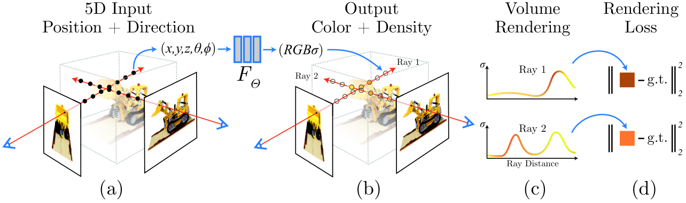
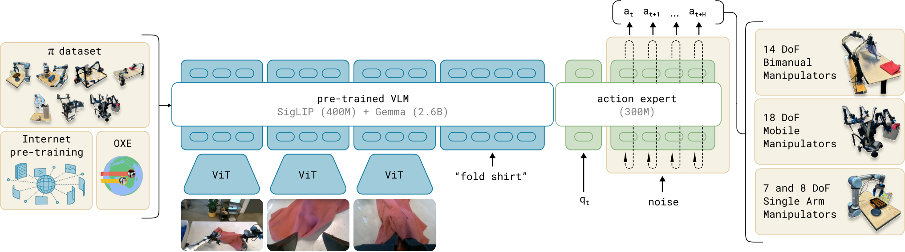

第 48 章 2024–2026 前沿与开放问题
当我们站在 2026 年的技术高地上回望，多模态人工智能的发展速度远超了历史上任何一次技术革命。在短短数年间，模型从早期的图文双塔静态匹配（CLIP），跨越到基于大型语言模型（LLM）的图文对话理解（LLaVA、InternVL），再跃升至统一自回归生成（Chameleon、Janus-Pro）、超高清文档解析、复杂 GUI 自主智能体以及物理具身机器人控制。过去被视为天堑的单模态边界，正在一个又一个被由海量算力与数据熔铸的多模态基础模型彻底碾平。
然而，尽管当下的前沿模型展现出了令人叹为观止的应用落地能力，学术界与顶级工业实验室的领军科学家们均清醒地认识到：我们距离真正物理自洽、具备自主世界常识与通用推理能力的“原生人工通用智能（Native AGI）”依然隔着数座崇山峻岭。当前的多模态系统依然受制于高频物理常识匮乏、在不可见长程推演中容易积累复合幻觉、在三维连续动力学中缺乏因果干预直觉、以及训练计算扩展法则（Pre-training Compute Scaling）边际收益递减的严峻瓶颈。
作为全书核心技术理论的收官华章，本章将带领读者跳出具体的工程代码实现，登高远眺 2024–2026 年多模态大模型领域最激动人心的五大核心前沿战役与开放性终极课题：原生任意模态统一、交互式时空世界模型、具身 VLA 的物理常识涌现、测试时计算扩展（Test-Time Compute Scaling）的视觉跃迁、以及神经感知与符号推理的终极融合。
多模态人工智能的宏观进化路径呈现出波澜壮阔的螺旋上升规律：
- 第一纪元：模态外挂拼贴（Modular Patching, 2021–2023）：以单向投影连接器（Linear Projection / Q-Former）为核心，强行将冻结的视觉特征“翻译”成文本 Token 塞入预训练文本 LLM。视觉只是语言模型的附庸输入，模型缺乏原生的视觉常识，生图与看图完全割裂。
- 第二纪元：全词表自回归统一与原生对齐（Native Co-training, 2023–2025）：从预训练第一天起，文本、图像、音频、视频代码直接混合在统一因果 Transformer 中共同反向传播（如 Chameleon、Emu3、Janus、Gemini 2.0）。多模态交互体验迎来了“任意输入到任意输出（Any-to-Any）”的原生流畅感。
- 第三纪元：从观察世界到干预世界（From Passive Perception to Interactive World Action, 2025–2026+）：多模态大模型不再是冷眼旁观的图片描述者，而是演变为具有三维空间几何、因果动力学与物理动作闭环控制能力的“具身世界模拟器”。模型学会了在想象中进行行动推演，并在真实物理世界中完成复杂的灵巧长程操作。

48.1 前沿战役一：从 Token 化自回归到连续流匹配（Flow Matching）的统一终局
在第 20 章中，我们探讨了以 Chameleon、Emu3 与 Janus 为代表的离散自回归统一模型。然而，随着 Flux.1、SD3 以及流匹配（Flow Matching）技术的全面爆发，学术界正在热烈争论一个关乎底层信仰的技术命题：图像与连续物理世界真的适合被粗暴地量化为离散的 Token 吗？
离散自回归（Discrete Autoregression）的优势在于其形式上与自然语言语言模型完美对齐，天然享有 Transformer 在序列建模上的庞大工程红利；但其理论代价极其沉重：
- 一维光栅扫描对二维空间对称性的践踏：强制要求图像从左上角逐行扫描至右下角，完全破坏了视觉在二维欧氏空间中的旋转不变性与各向同性；
- 向量量化（Vector Quantization）的信息有损塌陷：无论代码本设为 8,192 还是 65,536，离散量化操作都像是在高维连续空间中强行施加不可逆的阶梯形有损截断，导致微观毛发、高光渐变与超长尾生僻纹理发生永久性失真。
正因如此，以 Meta Transfusion（arXiv:2408.11039）与前沿的原生双流模型为代表的混合统一架构（Hybrid Unified Architecture）正在成为新的学术共识：
$$\mathcal{L}_{\text{Unified}} = \mathcal{L}_{\text{LM}}(\text{Text Tokens}) + \lambda \cdot \mathcal{L}_{\text{Flow}}(\text{Continuous Visual Latents})$$在单一共享的 Transformer 主干中，文本序列使用标准因果掩码与交叉熵损失进行因果预测；而视觉 Patches 保留连续浮点张量，使用完全双向注意力的连续流匹配速度场损失进行去噪建模。这种“离散思考、连续作画”的混合架构，被公认为最接近人类大脑左右半球分工的终极形态。
48.2 前沿战役二：交互式时空世界模型（Interactive Spatiotemporal World Models）
从 OpenAI Sora 到快手的可灵（Kling）、智谱 CogVideoX、阿里 Wan2.1，纯视频生成模型已经能够生成具有电影级逼真度的视频片段。然而，工业界普遍达成的共识是：“能够生成逼真视频，绝不等于理解了物理世界（Video Generation $\neq$ World Simulator）”。

现有视频生成模型本质上是在像素条件概率分布上执行无状态的扩散插值，一旦涉及物理碰撞、质量守恒、重力加速度与刚体接触，模型依然会频繁产生“桌腿穿模”、“水流倒流”、“物体凭空消失”等违背现实物理常识的荒谬幻觉。
真正的交互式世界模型（Interactive World Models）正在从以下三个核心维度实现技术突围：
- 动作条件化状态转移（Action-Conditioned Dynamics）： 世界模型不仅接收前序观察帧，更必须强制接收智能体输入的连续控制动作 $a_t$（如油门开度、方向盘转角、机械臂力矩），并求解未来环境状态的条件联合分布： $$P(S_{t+1} \mid S_{\le t}, a_{\le t})$$ 以 Google DeepMind 的 Genie 与哈佛大学的 GameNGen 为代表，模型能够在没有传统游戏引擎代码介入的情况下，纯凭神经权重实时仿真复杂的动作对抗环境（如《DOOM》游戏），帧率突破 20fps。
- 三维隐式物理引擎内化（Implicit 3D Physics Integration）： 将 3D 高斯泼溅（3DGS）、隐式神经辐射场（NeRF）以及可微有符号距离场（SDF）与大规模 DiT 深度融合。模型在生成下一个视频帧时，底层首先在连续的三维几何体隐空间中完成刚体运动学与流体 Navier-Stokes 方程的隐式推演，再通过可微光栅化渲染为最终二维像素，从几何物理源头彻底铲除“视角翻转后物体形变”的顽疾。
48.3 前沿战役三：具身视觉-语言-动作（VLA）大模型的物理常识涌现
在传统的纯文本世界中，“苹果掉落”只是一串由 ASCII 字符组成的符号序列；但在物理世界中，“苹果掉落”伴随着空气阻力、重力加速度 $g \approx 9.8\text{ m/s}^2$、撞击地面的弹性形变声响以及表皮破损的汁水飞溅。纯语言模型永远无法通过纯文本获得真实的物理触觉——这就是认知哲学中著名的“莫拉维克悖论（Moravec's Paradox）”与符号接地困境（Symbol Grounding Problem）。

DeepSeek-AI 在 2025 年初发布的 DeepSeek-R1: Incentivizing Reasoning Capability in LLMs via Reinforcement Learning（arXiv:2501.12948）证明了惊人的“顿悟时刻（Aha Moment）”：
- 零监督冷启动（Zero-Shot RL Cold Start）：无需昂贵的人类反思轨迹标注，直接使用基于规则的可验证奖励（Rule-based Verifiable Rewards: 答案正确性 + 格式合规性），通过大规模群相对策略优化（GRPO）驱动模型自主探索出长达数万 Token 的超长思维链。
- 视觉推理领域的全面迁徙（Visual RLVR）：这一突破迅速点燃了多模态领域。在几何图证明、电路布局布线与细粒度病理分析中，只要环境能够提供自动化的形式化验证器（如 Python 符号计算、SPICE 电路仿真器、高精 IoU 几何断言），多模态模型便能在强化学习自对弈中自发习得“主动放大可疑区域”、“交叉验证几何辅助线”与“推翻前序直觉假设”的高级专家级反思能力。
48.3.2 具身智能长程任务的软硬件协同演进挑战
在迈向通用具身机器人的征途上，算法只是冰山一角。2025–2026 年的前沿研发表明，如果底层硬件机械结构与传感芯片无法实现高带宽协同，算法的智能将沦为无源之水：
- 高频本体触觉皮肤与多模态阵列（Tactile Electronic Skin）：人类手指表面分布着密集的迈斯纳小体与默克尔细胞，能够以数百赫兹感知微米级滑移。新一代仿生机器人全面普及阵列式高密度压阻触觉皮肤，将压力、剪切力张量直接编码为触觉 Token 实时注入 VLA 模型，使机器人能够盲摸抓取生鸡蛋与柔软草莓而不发生碎裂。
- 端侧超低功耗神经拟态视觉传感器（Event Cameras / Neuromorphic Vision）：传统基于固定帧率（30fps/60fps）的 CMOS 相机会在高速运动中产生严重运动模糊（Motion Blur），且在强逆光下动态范围极其狭窄。事件相机（Dynamic Vision Sensor, DVS）以微秒级时间分辨率异步输出每个像素的光强变异流，赋予了具身智能体在时速百公里无人机穿越丛林或高速拦截乒乓球时的极致动态视力。
2025–2026 年，以 RT-2、OpenVLA、Physical Intelligence $\pi_0$ 为代表的 VLA（Vision-Language-Action）基础模型正在跨越这道鸿沟。研究人员证实：当多模态大模型的预训练数据中，高精度物理遥操作轨迹（Teleoperation Trajectories）达到数百万小时规模时，模型在隐空间中自发涌现出了令人惊叹的跨形态物理常识迁移能力（Embodied Common Sense Emergence）。
即使机器人从未在训练中见过某种新型特种折叠伞，凭借互联网视频中人类撑伞的视觉先验、结合双目相机的实时三维点云几何推理，它能够自主规划出“左手捏住伞骨关节、右手施加向上滑动力矩”的双臂协调柔性动作，并根据指尖六维力矩传感器（F/T Sensor）的实时触觉反馈自适应调整抓握力度，防止捏碎塑料脆性构件。这种物理常识的涌现，标志着具身智能正式从“特定工位自动化”迈向“全自主通用家庭/工厂服务劳动力”。
48.4 前沿战役四：测试时计算扩展（Test-Time Compute Scaling）的视觉推理跃迁
2024 年底 OpenAI o1 与 2025 年初 DeepSeek-R1 的惊艳问世，彻底颠覆了“大模型只能靠狂堆预训练数据和参数量提升智力”的传统教条，确立了大模型发展的第二扩展定律：测试时计算扩展法则（Test-Time Compute Scaling Law）。即：在模型推理阶段，通过赋予模型数千个“思考 Token（Thinking Tokens）”进行蒙特卡洛树搜索（MCTS）、自我质疑与反思纠错，小模型在数学和编程难题上的表现能够越级碾压大参数基座。
在 2025–2026 年，这一范式正在以前所未有的烈度席卷多模态领域，诞生了全新的多模态可验证强化学习（Multimodal Reinforcement Learning with Verifiable Rewards, Visual RLVR）：
面对复杂的几何奥数题、芯片微架构布线图或病理切片诊断时，新一代多模态推理模型（如 QVQ-72B、o3-mini Vision）不再盲目一次性吐出最终结论，而是展现出了与人类顶尖专家完全一致的**主动视觉探索思维链（Active Visual Thinking Loop）**：
- 假设生成（Hypothesis Proposing）：“画面右侧似乎存在一处微小的裂纹疑似金属疲劳”；
- 主动视觉调用（Active Tool / Zoom-in Action）：模型自发向系统环境派发指令：
<action>zoom_and_crop(x1=340, y1=810, scale=4.0)</action>，主动将争议局部放大 4 倍并重新输入视觉注意力； - 几何逻辑推演与自我否定（Self-Correction）：“放大后观察发现，该线条存在高光反光且横跨两个平整工件，判定为制造装配划线而非裂纹，推翻前序假设”；
- 符号方程联立（Symbolic Solving）：调用外部 Python 解释器联立力学方程并执行数值求解，最终输出百分之百物理可验证的严谨审计报告。
48.5 前沿战役五：超人类感知与神经符号系统（Neuro-Symbolic Integration）
人类的肉眼只能感知电磁波谱中极其狭窄的波段（380nm~750nm 的可见光），耳膜只能捕获 20Hz~20kHz 的机械声波。而新一代通用多模态模型正在全面冲破人类生物感官的生理藩篱，走向超人类全频谱感知（Super-Human Omni-Sensing）：
- 非可见电磁频段融合：红外热成像（LWIR）、近红外夜视、毫米波雷达（mmWave）、高光谱（Hyperspectral）成像被直接映射为统一的多模态时空 Token。模型在完全无光的漆黑烟雾迷宫中，能够依靠热辐射与毫米波透视成像，精准透视墙体背后的火源与被困人员生命体征；
- 工业级超声与微震感知：将大型变电站变压器的微观局部放电超声信号与工业听诊声谱直接送入多模态大模型，提前数周预警轴承早期磨损与绝缘老化故障；
- 神经符号逻辑大一统（Neuro-Symbolic Duality）：深度神经网络擅长模糊直觉关联与感知抽象，但天生在形式逻辑系统（如一阶谓词逻辑、严谨欧式几何公理系统）中存在幻觉漂移；通过在 Transformer 隐层自注意力中嵌入可微形式化定理证明器（如 Lean 4 / Isabelle），模型实现了“感知归神经、推理归符号”的终极几何对齐，使得复杂工程图纸与芯片物理验证达到数理逻辑层面的绝对严密性。
48.5.2 多模态基础模型的认知前沿：反事实推理与物理因果干预
在传统的机器学习体系中，模型主要拟合数据集中各类特征变量之间的统计相关性（Correlation）。然而，正如因果推断之父朱迪亚·珀尔（Judea Pearl）在“因果关系之梯（Ladder of Causation）”中所指出的，真正的智慧必须跨越第二层“干预（Intervention: $P(Y \mid do(X))$）”与第三层“反事实（Counterfactuals: 如果当时我没有这样做，世界会怎样？）”。
当前前沿多模态世界模型正在探索基于物理干预的反事实推演：
- 可微物理反事实推演（Differentiable Counterfactual Simulation）：给定一段小球在弹簧摆上运动的真实视频，向模型提出反事实询问：“如果重力加速度减半，且最下方的摆锤质量增加两倍，接下来的运动轨迹将如何演变？”。模型必须将输入像素解缠为结构化因果图（Causal DAG），通过在隐变量上执行 $do$-算子干预，生成物理上严格自洽的全新反事实视频。
- 接触富集型长程任务的因果归因（Causal Credit Assignment）：在具身长任务（如拆解复杂的机械手表）中，当最终组装失败时，多模态模型能够通过反向遍历因果注意链，精准定位出“在第 42 步时镊子夹持角度倾斜了 2 度导致微型齿轮卡死”的根因，并自主生成反思性纠错演示数据。
48.5.3 终极思考：从碳基感官到硅基全息智能的演进范式
回顾人类科学史，人类的感官进化是极其局限的：我们看不见紫外线与红外线，听不见次声波与超声波，无法直接感知地磁场与引力波。在漫长历史中，人类依靠制造望远镜、显微镜、示波器与粒子对撞机等物理仪器，将不可见的物理宇宙“降维”映射为视网膜可以接收的光子。
而多模态大模型的终极愿景，绝不是简单地模拟一双人类的眼睛或一对人类的耳朵，而是成为连接全频谱、全物理维度的全息通用宇宙解析引擎（Universal Holographic Intelligence）：
- 全模态各向同性流形（Omni-Modal Isotropic Manifold）：在这个终极模型中，文本、声波、红外光、引力波时间序列、基因螺旋结构、蛋白质折叠动力学、量子比特态全部作为平等的时空波包流（Wave packets）参与跨模态交叉自注意力计算；
- 具身与宏观宇宙的双向闭环：在微观纳米尺度，多模态智能体指导扫描隧道显微镜逐个搬运单个原子；在宏观工业尺度，统领巨型清洁能源核聚变托卡马克装置的磁场等离子体实时约束控制；在浩瀚深空，自主指挥深空探测器编队在未知系外行星地表完成复杂矿物勘探与生命迹象搜寻。
48.6 动手实战：构建多模态测试时推理主动放大验证器（VisualCoTEngine）
为了让读者切身体会 2026 年前沿“测试时主动计算与反思缩放”的核心精髓，以下代码给出了一个前沿视觉思维链主动验证器（VisualCoTEngine）的标准工程原型。模拟模型在面对高难度细粒度识别时的自发主动聚焦、局部自愈与置信度校准流程：
# -*- coding: utf-8 -*-
"""2026 前沿实战：多模态测试时计算（Test-Time Compute）主动视觉聚焦与反思验证器
模拟人类专家的视觉思维链：宏观猜想 -> 局部高倍率重采样 -> 置信度贝叶斯更新 -> 最终裁定
"""
import numpy as np
from PIL import Image
from typing import Dict, Any, List, Tuple
class VisualCoTEngine:
def __init__(self, confidence_threshold: float = 0.85, max_zoom_depth: int = 3):
self.confidence_threshold = confidence_threshold
self.max_zoom_depth = max_zoom_depth
def simulate_multimodal_glance(self, image: Image.Image, query: str) -> Dict[str, Any]:
"""第一步：全局快速扫视（Initial Global Glance）"""
print(f"[THOUGHT LOOP] 全局初探：针对问题 '{query}' 扫描全图尺寸 {image.size}...")
# 模拟模型输出初探结论，置信度较低 (0.65)，但提出了可疑的局部 RoI
return {
"initial_hypothesis": "疑似在画面右上角存在微小缺陷裂纹",
"confidence": 0.65,
"suspicious_roi_norm": [680, 120, 850, 320] # [xmin, ymin, xmax, ymax] 0~1000
}
def active_zoom_crop(self, image: Image.Image, norm_box: List[int], padding_ratio: float = 0.1) -> Image.Image:
"""测试时主动行动：根据思考结果对高危区域进行无损高倍率局部裁剪"""
w, h = image.size
xmin, ymin, xmax, ymax = norm_box
# 物理坐标转换与边缘自适应微膨胀
pad_x = (xmax - xmin) * padding_ratio
pad_y = (ymax - ymin) * padding_ratio
crop_box = (
max(0, int((xmin - pad_x) / 1000.0 * w)),
max(0, int((ymin - pad_y) / 1000.0 * h)),
min(w, int((xmax + pad_x) / 1000.0 * w)),
min(h, int((ymax + pad_y) / 1000.0 * h))
)
print(f"[TEST-TIME COMPUTE] 触发主动感知动作：将物理视野定向聚焦裁剪至区域 {crop_box}")
return image.crop(crop_box)
def deliberate_on_crop(self, cropped_patch: Image.Image, hypothesis: str) -> Dict[str, Any]:
"""第二步：微观高分辨率慢思考与自我质疑反思（Deliberation & Verification）"""
print(f"[THOUGHT LOOP] 局部慢思考中：输入清晰局部特征块，细粒度核验假说 '{hypothesis}'...")
# 模拟高分辨率特征分析后，模型排除了早期幻觉，实现了置信度的自我校准跃升
return {
"refined_observation": "高倍率观察显示该条纹具有连续的光滑金属倒角，边缘伴随均匀涂覆工艺痕迹",
"verdict_update": "彻底推翻'裂纹'假设，判定为标准制造装配引导线",
"final_confidence": 0.96,
"verification_status": "CONVERGED"
}
def execute_visual_cot_pipeline(self, full_image: Image.Image, user_query: str) -> Dict[str, Any]:
"""端到端闭环执行测试时视觉思维链"""
thought_trajectory = []
# 1. 宏观快思考
glance = self.simulate_multimodal_glance(full_image, user_query)
thought_trajectory.append({"stage": "fast_glance", "output": glance})
# 2. 判断是否需要调动测试时计算量
if glance["confidence"] < self.confidence_threshold:
print(f"[TEST-TIME EXPANSION] 初探置信度 {glance['confidence']:.2f} 低于门槛 {self.confidence_threshold}，启动视觉慢思考搜索...")
# 主动执行空间放大
focused_patch = self.active_zoom_crop(full_image, glance["suspicious_roi_norm"])
# 微观深度核验
deliberation = self.deliberate_on_crop(focused_patch, glance["initial_hypothesis"])
thought_trajectory.append({"stage": "active_deliberation", "output": deliberation})
final_answer = deliberation["verdict_update"]
final_conf = deliberation["final_confidence"]
else:
final_answer = glance["initial_hypothesis"]
final_conf = glance["confidence"]
return {
"query": user_query,
"final_verdict": final_answer,
"calibrated_confidence": final_conf,
"test_time_compute_applied": len(thought_trajectory) > 1,
"thinking_steps": thought_trajectory
}
# 演示前沿视觉思考链引擎
if __name__ == "__main__":
engine = VisualCoTEngine(confidence_threshold=0.85)
# 模拟一张 4K 高分辨率工业截屏
mock_hd_image = Image.new("RGB", (3840, 2160), color=(220, 225, 230))
result = engine.execute_visual_cot_pipeline(
mock_hd_image,
user_query="请严格核验涡轮叶片表面是否存在疲劳微裂纹缺陷？"
)
import json
print("\n--- 2026 前沿测试时视觉推理完工报告 ---")
print(json.dumps(result, ensure_ascii=False, indent=2))
48.6.2 多模态测试时蒙特卡洛树搜索（MCTS）双向回溯规划器
在顶尖的前沿视觉逻辑推理与复杂的物理推演任务中，简单的单次“初探 $\to$ 放大”往往不足以应对多重干扰项。如果第一次假设提出的可疑区域完全偏离了真实故障点，单向线性的流水线就会直接走向死胡同。
2026 年最具颠覆性的前沿推理架构是测试时视觉 MCTS 树搜索（Test-Time Visual MCTS Planner）。它将每一次局部视觉观测、工具调用与几何分析建模为搜索树中的一个决策节点，通过计算 UCB（Upper Confidence Bound）探索分数平衡“深度验证”与“广度搜索”：
# -*- coding: utf-8 -*-
"""多模态测试时树搜索（Test-Time Visual MCTS）前沿决策架构
实现：视觉状态节点展开、启发式 Q 值反向传播、剪枝回溯与最优因果路径输出
"""
import math
from typing import List, Dict, Optional, Tuple, Any
class VisualMCTSNode:
def __init__(self, state_desc: str, parent: Optional['VisualMCTSNode'] = None, action_taken: str = ""):
self.state_desc = state_desc
self.parent = parent
self.action_taken = action_taken
self.children: List['VisualMCTSNode'] = []
self.visits: int = 0
self.total_value: float = 0.0
@property
def q_value(self) -> float:
return self.total_value / (self.visits + 1e-7)
def ucb_score(self, c_param: float = 1.414) -> float:
"""计算 Upper Confidence Bound 分数，兼顾高价值探索与低频节点发掘"""
if self.visits == 0:
return float('inf')
if not self.parent:
return self.q_value
exploration = c_param * math.sqrt(math.log(self.parent.visits) / self.visits)
return self.q_value + exploration
class VisualMCTSPlanner:
def __init__(self, simulation_budget: int = 5):
self.simulation_budget = simulation_budget
def select_promising_leaf(self, root: VisualMCTSNode) -> VisualMCTSNode:
"""根据 UCB 准则自顶向下选择最具潜力的未充分展开叶子节点"""
current = root
while current.children:
# 贪婪选择 UCB 最高的分支
current = max(current.children, key=lambda node: node.ucb_score())
return current
def expand_and_evaluate(self, node: VisualMCTSNode) -> Tuple[List[VisualMCTSNode], float]:
"""对当前叶子节点展开下一阶段候选视觉探索动作，并给出环境奖励评价"""
# 模拟生成 2 种截然不同的后续排查行动
actions = [
("调用高光谱红外滤波透视内部发热源", "发现电路板电容存在异常微观温升 12℃", 0.92),
("使用边缘梯度滤波器检查焊点机械间隙", "焊点外观饱满完整，机械应力处于安全区间", 0.45)
]
new_nodes = []
for act, obs, simulated_reward in actions:
child = VisualMCTSNode(state_desc=obs, parent=node, action_taken=act)
node.children.append(child)
new_nodes.append(child)
# 默认取最佳动作的模拟反馈值
best_eval = max(a[2] for a in actions)
return new_nodes, best_eval
def backpropagate(self, node: VisualMCTSNode, reward: float):
"""沿因果父链反向回传价值更新，刷新全局访问计数与 Q 值"""
curr = node
while curr is not None:
curr.visits += 1
curr.total_value += reward
curr = curr.parent
def search_best_reasoning_path(self, initial_problem: str) -> Dict[str, Any]:
"""主入口：执行多轮蒙特卡洛树搜索推演，输出置信度最高的最优因果证据链"""
root = VisualMCTSNode(state_desc=f"根状态：全局视觉输入 - {initial_problem}")
for sim in range(self.simulation_budget):
leaf = self.select_promising_leaf(root)
expanded_children, eval_score = self.expand_and_evaluate(leaf)
# 反向传播最高反馈
target_update = expanded_children[0] if expanded_children else leaf
self.backpropagate(target_update, eval_score)
# 提取访问次数最多且 Q 值最高的最优路径
best_path = []
curr = root
while curr.children:
curr = max(curr.children, key=lambda n: (n.visits, n.q_value))
best_path.append({
"action": curr.action_taken,
"verified_observation": curr.state_desc,
"confidence_q": round(curr.q_value, 3),
"explored_visits": curr.visits
})
return {
"root_query": initial_problem,
"total_simulations": self.simulation_budget,
"optimal_reasoning_trajectory": best_path,
"final_conclusion": best_path[-1]["verified_observation"] if best_path else "未达收敛"
}
# 演示多模态 MCTS 推理
if __name__ == "__main__":
planner = VisualMCTSPlanner(simulation_budget=4)
report = planner.search_best_reasoning_path("精密卫星星载载荷主控电路板突发异常断电原因排查")
print("多模态 MCTS 树搜索推理完工轨迹:")
import json
print(json.dumps(report, ensure_ascii=False, indent=2))
48.7 全书大结语：迈向通用人工智能的星辰大海
从第 0 章的第一行代码与导读地图开始，我们共同跨越了整整四十八章的浩瀚征程。我们亲历了注意力机制与矩阵计算的数学严密之美，见证了 CLIP 对比学习拉开多模态宇宙序幕的壮丽瞬间；我们亲手推导了扩散去噪与整流流匹配的非平衡态物理轨迹，拆解了高分辨率切片、细粒度定位、GUI 自动化控制与多模态生产流水线的每一处微观工程暗礁；我们更深切思考了模型对齐、机器伦理与防伪溯源对人类文明繁荣的永恒价值。
多模态人工智能的伟大之处，不仅在于它能够理解我们敲击下的字符，更在于它开始真正看懂我们所居住的广袤物理世界——从浩瀚星云的望远镜巡天光谱，到纳米级别半导体晶圆的微观瑕疵；从清晨第一缕洒在窗台上的柔和晨曦，到流水线上机械臂每一次精准轻柔的工业握持。
理论已经完备，工程基线已经筑牢。大幕已经拉开，星辰大海就在前方。愿阅读本书的每一位技术远航者，皆能手握理论之烛、身负工程利剑，在这场波澜壮阔的通用智能大航海时代中，开拓出属于人类智慧的全新疆界！
-
理论终极交锋：为什么说在未来多模态大模型的演进中，“语言（Text）”不再是唯一的通用中枢符号，而可能退化为物理世界感知流（Visual/Spatial/Temporal Streams）的一种特殊低带宽离散投影？
查看解析
人类语言是智人在漫长进化历程中为了低带宽社交沟通（声带发声与骨传导接收）而发明的离散符号压缩协议。虽然语言蕴含了人类高度抽象的文明常识与逻辑推理体系，但在表达三维空间几何、动力学连续碰撞、流体形变与非言语化感知直觉时，语言的信息带宽存在严重的理论物理上限（所谓的“一图胜千言”）。当未来的世界模型与具身 VLA 大模型直接在高维连续时空流形中进行预训练与自回归去噪时，模型内部隐层表征天然掌握了连续因果演化的微观物理规律。在此体系下，人类自然语言仅仅是高阶意图下达的一个稀疏控制接口（Sparse Steering Signal），物理世界本身的感知流才是更加通用、稠密、且不可替代的基石本体。
-
测试时计算本质：从信息论与搜索空间的角度剖析，为什么“测试时计算扩展（Test-Time Compute Scaling）”在多模态视觉推理（Visual CoT）中展现出了比单纯扩大预训练模型参数量更高的计算投资回报率（Compute ROI）？
查看解析
在预训练阶段增加计算量，是在全量开放域参数空间中盲目拟合更广阔的被动分布，其边际收益遵循严苛的幂律衰减（Power Law Diminishing Returns）。而在测试时推理阶段，针对一个具体的难题（如复杂机械图纸审计），解空间的验证条件是高度局域化且可验证的。通过在推理阶段动态分配算子资源执行“主动局部放大（Zoom-in）、跨模态代码执行反验、剪枝回溯重试”，模型将算力高密度集中在当前具体问题的“高不确定性局部子空间”内，将单一确定性前向传播的贪心单抽，升级为基于贝叶斯信念更新的树搜索蒙特卡洛采样，从而以极低参数代价跨越了原本百倍参数量专用大模型都无法逾越的复杂认知鸿沟。
-
具身莫拉维克困境突破：具身机器人控制中的“触觉-视觉-本体感知多模态融合”，与纯软件界面下的“图文多模态融合”相比，面临哪些最为本质的物理不可逆性与时延约束？
查看解析
（1）硬实时低时延约束（Hard Real-Time Latency）：在网页对话中，大模型延迟 500 毫秒输出用户毫无痛感；而在高速运动控制中，机械臂与外力接触的冲击响应时间窗通常在 10 毫秒以内（100Hz 控制环路），超过 50 毫秒的延迟会直接引发闭环控制震荡与机械撞击事故；
（2）物理交互的不可逆性与安全代价：在虚拟数字世界中，点击错误可以Ctrl+Z或环境快照回滚；而在物理世界中，机械臂失控捏碎贵重玻璃制品、碰撞导致人身伤害是绝对不可逆的严重事故；
（3）连续动力学与非刚性接触物理建模：触觉传感器反馈的是高频剪切力分布、滑动摩擦力矩与温度变化，其背后的物理法则远比二维平面离散光栅扫描复杂得多，要求模型具备原生连续的时空流形建模能力。 -
时空世界模型的能量守恒与热力学一致性：在生成式时空世界模型中，如何从数学损失层面约束模型生成符合动量守恒、能量守恒与质量守恒的连续动态，避免长程推演中的“质量自发湮灭”或“能量发散爆炸”？
查看解析
为了强行注入物理守恒定律，现代神经物理世界模型（Physics-Informed Neural World Models, PINN-WM）在标准的扩散去噪速度场损失之外，引入了基于哈密顿力学（Hamiltonian Mechanics）或拉格朗日形式系统的可微物理正则化项：
（1）可微守恒泛函惩罚：构建总机械能守恒约束 $\mathcal{L}_{\text{energy}} = \|\frac{d}{dt}(T(s_t) + V(s_t))\|^2$，迫使系统动能与势能之和沿预测时间轴的导数为零；
（2）哈密顿神经向量场（Hamiltonian Neural Networks, HNN）：将隐层状态参数化为广义坐标 $q$ 与广义动量 $p$，网络直接拟合标量哈密顿量 $\mathcal{H}(q, p)$，并依据正则方程更新状态转移流：$\dot{q} = \frac{\partial \mathcal{H}}{\partial p}, \dot{p} = -\frac{\partial \mathcal{H}}{\partial q}$，从对称性（Noether's Theorem）底层保证相空间体积守恒与辛结构（Symplectic Structure）不被破坏；
（3）流体质量守恒不可压缩惩罚：在涉及烟雾与液体的模拟中，施加可微散度自由度约束 $\|\nabla \cdot \vec{v}\|^2 = 0$，彻底消除了局部像素凭空凭空消失的非自然伪影。 -
长程多模态智能的熵增与复合幻觉雪崩：在长达数万步的连续多模态长程交互中，智能体即便每一步的推理准确率高达 99.9%，随着时间推移系统依然会面临不可避免的“熵增崩溃（Entropy Catastrophe）”。未来系统级自我修复架构应当具备怎样的免疫代谢机制？
查看解析
任何马尔可夫决策过程在无限长视界下都会面临不确定性累积与误差扩散。未来通用智能体必须建立类似于生物机体的“双轨免疫代谢架构”：
（1）周期性睡眠与离散记忆重固化（Periodic Sleep & Consolidation）：智能体定期在虚拟低能耗状态下执行“离线梦境回放”，对白天的海量稠密连续感知流进行奇异值截断（SVD）与因果剪枝，剔除冗余高频熵增噪点，仅将核心因果图谱固化至长期语义拓扑库；
（2）自适应重锚定与外部真理探针（Anchor Probing against Ground Reality）：当检测到隐层注意力的自注意力熵（Entropy of Attention Distribution）超出安全阈值时，强制暂停长程推演，向外部物理环境主动派发高保真校准动作（如重新对准已知绝对坐标参考点测距），重置协方差发散矩阵；
（3）层级化因果断言熔断器：设立各级不可违反的“元公理断言”，一旦发现中间状态在数理逻辑或基本常识上出现自相矛盾，果断触发快速回溯回滚（Checkpoint Rollback），切除故障分支。 -
生物神经元与人工张量网络能效比之谜：人脑仅凭 20 瓦特的极致微弱功耗便能实时处理全息超高带宽视觉、触觉、听觉与复杂的哲学抽象思考；而当今训练与运行一个前沿多模态大模型需要消耗数百千瓦甚至兆瓦级的庞大电力。导致这一多达百万倍能效差距的本质计算架构鸿沟是什么？未来的绿色多模态计算有哪些突破路径？
查看解析
本质鸿沟根植于冯·诺依曼架构的物理局限与计算范式的根本差异：
（1）内存墙与数据搬运能耗（Memory Wall）：现代 GPU 在高带宽显存（HBM）与计算核心（Tensor Cores）之间搬运一个 16 位浮点数的能耗，比执行一次乘加运算本身的能耗高出两个数量级；而人脑采用存算一体（In-Memory Computing）架构，突触既是存储介质又是计算中枢；
（2）时钟同步稠密矩阵计算 vs. 极稀疏事件驱动脉冲（Spike-Driven Sparsity）：现代 Transformer 的自注意力计算对全量 Token 无差别进行稠密矩阵乘法；而人脑 860 亿神经元在任意瞬间仅有不到 1% 处于脉冲放电激活状态，信息的传递严格遵循“有事件才触发（Event-Driven）”的异步脉冲时序编码（Spike-Timing-Dependent Plasticity, STDP）；
（3）模拟计算与热力学随机性利用：人脑神经元直接利用离子通道的模拟物理电导进行非线性整合，甚至主动将生物热运动涨落转化为随机采样的算力源泉；未来突破路径必然涵盖类脑神经形态芯片（Neuromorphic Hardware）、硅基光子计算（Optical Matrix Multiplication）以及基于可变电阻器件（忆阻器 Memristor）的模拟存算一体网络。